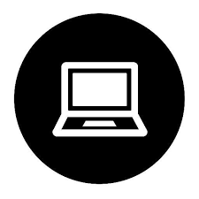

Programming +
Software Engineering +
Human Computer Interaction.
About.
I'm a Master's student in Computer Science advised by Prof. Margaret Burnett, in the Electrical Engineering & Computer Science department at Oregon State University.
Quick links:
My CV (updated December 2019)
| Linkedin
| GitHub
Work Experiance
Graduate Teaching Assistant
2019 - Present
Oregon State University College of Engineering
- CS 361 Software Enginerring I (FALL 2019)
- CS 493 Cloud Application Development (SPRING 2019)
- CS 340 Introduction To Databases (WINTER 2019)
Graduate Research Assistant
2018 - Present
Oregon State University College of Engineering
- Collaborator and Content Manager – Open source GitHub Project GenderMag Recorder’s Assistant Tool (chrome
extension) freely available on Google Chrome Web Store
- Designed Poster and Submitted showpiece Paper on GenderMag Recorder’s Assistant Tool at VL/HCC Conference
2018, Lisbon, Portugal. (https://ieeexplore.ieee.org/document/8506505)
- Reduce the process time by developing a web application for customizing GenderMag persona. (Gendermag.org)
Information Techonology Assistant
2018
Oregon State University College of Pharmacy
- Developed and updated the web contents of College of pharmacy website for optimal speed and performance.
- Worked on web-based faculty activity reporting solution tool Digital measures.
Software Specialist
2014 - 2016
EclinicalWorks
- Responsible for E2E software flow from client requirement gathering, decision making, development
- Designed application web pages using web technologies (JSP, JS, JSON, core java)
- Deployment (App and DB cloud), configuration, Datacenter monitoring for client till Go live period
- Responsible for DB recovery, App support, troubleshooting complex integration issues, Documentation
- Responsible for reporting services implementation on Windows & Linux using IBM Cognos Analytic Framework.
Projects.
The GenderMag Recorder's Assistant
2018 - present
- The GenderMag Recorder’s Assistant is a tool to identify gender - inclusiveness issues in software.
- GenderMag is a process you can use to find gender biases in user-facing software that you are designing/building. The GenderMag Recorder’s Assistant semi-automates using this process.
- It is easy to use and can be used by software engineers to management to usability experts.
Quick links:
Chrome Extension
| GitHub Code
| Short paper
The GenderMag Persona Tool
2018
- The GenderMag method (Gender Inclusiveness Magnifier) currently has three personas: Abi, Pat, and Tim.
- All three persona is Different in several ways: their Motivations to use the software, Information Processing Styles, Computer Self-Efficacy, Attitudes toward Risk, and style of learning new technologies
- For each GenderMag Session team selects a one persona out of three and Everyone in the room will "become" the same persona. All three persona are customizable with this tool and the team can use the persona as it is or they can customize based on need.
Quick links:
Live demo
| GitHub Code
Improving Usability- IRB OSU Website
2018
Persona, Balsamiq, Heuristic Evaluation, Interviews, Usability testing
- Enhanced usability and efficiency of Institutional Review Board (IRB) site by reducing steps
- Created a persona, identified a match for the persona and interviewed the individual
- Implemented heuristic evaluation to understand various user flows
- Built lo-fi and hi-fi prototypes and conducted user testing

Soccer Player Statistics (Data Analytics)
2018
- Data cleaning on raw Kaggle csv files and dumping of all data into SQL environment for future processing.
- Created web application based on Data analytics forecasting best player and player position on ground (Node.js)
Publications.
Papers
2018
Christopher Mendez, Andrew Anderson, Brijesh Bhuva, Margaret Burnett (2018)
IEEE Symposium on Visual Languages and Human-Centric Computing, October 2018, 2 pages.
Building software systems is hard work, with challenges ranging from technical issues to usability issues. If the technical issues are not addressed, the software cannot work but if the usability issues are not addressed, many potential users and customers are not even interested in whether it works. Further, usability must be inclusive: software needs to support diverse sorts of users. To help software professionals address gender-inclusive usability, we have created the GenderMag Recorder's Assistant tool. This Open Source tool is the first to semi-automate evaluating gender biases in software that is being designed, developed, or maintained. In this showpiece, we will demo the tool and encourage attendees to get involved in using it and improving upon it.